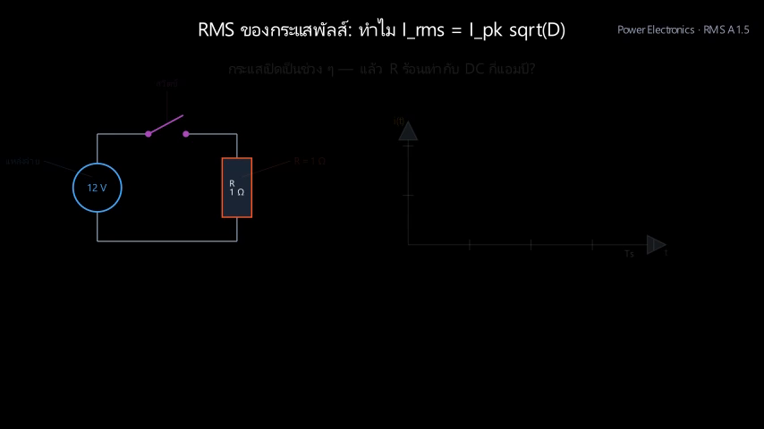
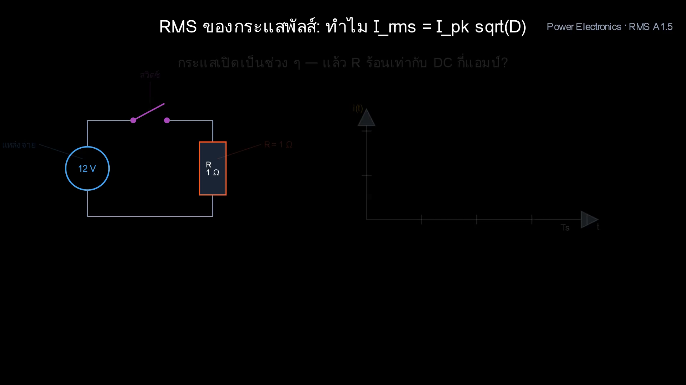

Course 01066556 · Power Electronics · Director Brief Verification
| Shot # | Time Range | Teaching Intention (จุดประสงค์การสอน) | Version A (เดิม) | Version B (ใหม่ - ตรวจสอบแล้ว) |
|---|


โหลดข้อมูล...
โหลดข้อมูล...
โหลดข้อมูล...
ร้อยเรียงสมบูรณ์แบบ: วงจรปิดสวิตช์ R ร้อน -> นิยามความร้อนเท่ากัน -> รูปคลื่นพัลส์ -> กำลัง P=i²R -> หาค่าเฉลี่ยพื้นที่ -> ถอดรากคืนหน่วย A -> ตัวเลขทดสอบ 25W -> ปรับค่า D -> กับดัก Iavg -> คำถามทบทวน
ตัวต้านทานกะพริบแสงส้มสัมพันธ์กับช่วงสวิตช์ ON กราฟ i(t)² และแท่งความร้อน 25 W เติบโตขึ้นอย่างสมดุลทำให้เชื่อมโยงความร้อนกับกระแสได้ทันที
รางสวิตช์ ON/OFF และเส้นสแกนเวลาแนวตั้งเคลื่อนที่ประสานกับจุดนำกระแส (Dots) ที่ไหลผ่านสายไฟใน Shot 3 อย่างแม่นยำ
การแปลงสูตร 3 จังหวะในกล่องข้อความ (mean = 1/Ts × area -> (1/Ts) × (Ipk² × D Ts) -> Ipk² D) มีแถบความสูงสีเขียวมรกตตัดผ่านแกนยืนยันทางเรขาคณิต
แทนค่า 10 A, D=0.25 ให้ Irms = 5 A พร้อมแถบความร้อน 25 W ทั้งฝั่ง DC (5²×1) และพัลส์ (10²×1×0.25) โตขึ้นสูงเท่ากัน 1.0 หน่วยพอดี
การ์ดเปรียบเทียบซ้าย-ขวา ชี้ชัดว่าถ้าใช้ Iavg (2.5 A) คำนวณความร้อนจะได้ 6.25 W ซึ่งหายไปถึง 4 เท่า เทียบกับการ์ดเขียว Irms (5 A) ได้ 25 W ถูกต้อง
แก้บั๊กการทับซ้อนของปีกกา Ts และระยะชิดขอบการ์ดใน Shot 2 หมดจด ตัวหนังสือฟอนต์ไทย Loma คมชัดระดับ 1080p ไม่มีเส้นรบกวน